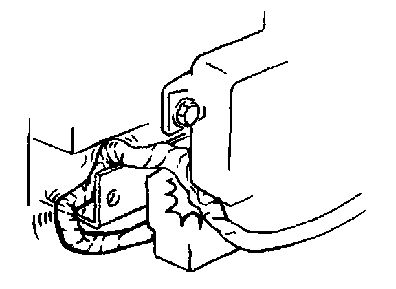
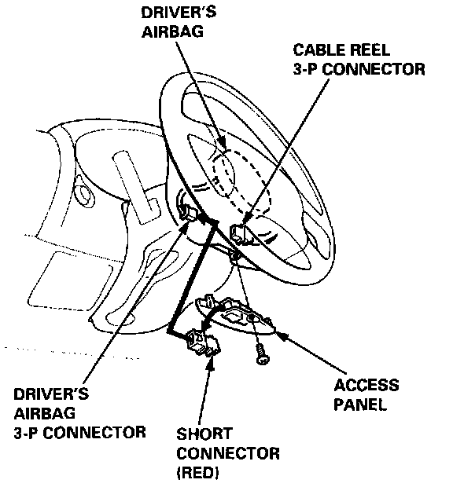
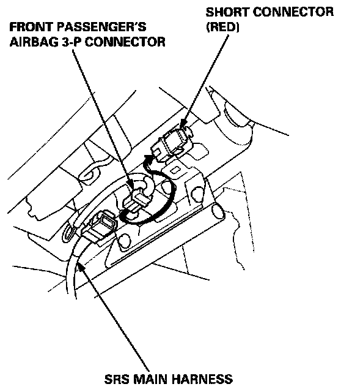
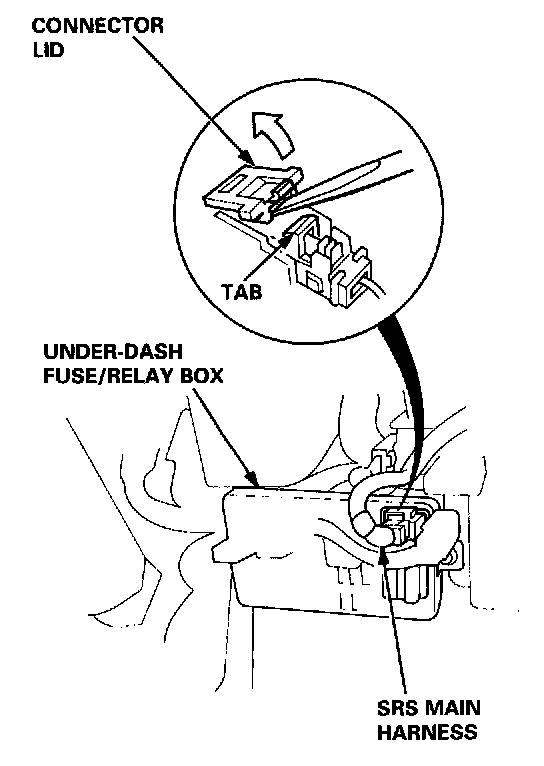

Wiring Precautions
WIRING PRECAUTIONS
- Never attempt to modify, splice or repair SRS wiring.
NOTE: All SRS electrical wiring harnesses are covered with yellow insulation.

- Be sure to install the harness wires so that they are not pinched or interfering with other car parts.
- Make sure all SRS ground locations are clean and grounds are securely fastened for optimum metal-to- metal contact. Poor grounding can cause intermittent problems that are difficult to diagnose.
Connecting the Short Connectors
WARNING: TO AVOID ACCIDENTAL DEPLOYMENT AND POSSIBLE INJURY, ALWAYS INSTALL THE PROTECTIVE SHORT CONNECTOR(S) ON THE DRIVER'S AND PASSENGER'S AIRBAG CONNECTOR(S) BEFORE WORKING NEAR ANY SRS WIRING.
NOTE: The original radio has a coded theft protection circuit. Be sure to get the customer's code number before disconnecting the battery cables.
1. Disconnect the battery negative cable, then disconnect the positive cable.
2. Connect the short connector(s) (RED):
Driver's Side:
- Remove the access panel from the steering wheel, then remove the short connector (RED) from the panel.

- Disconnect the 3-P connector between the driver's airbag and cable reel, then connect the short connector (RED) to the airbag side of the connector.
Front Passenger's Side:
- Remove the glove box damper (see section 20), and then remove the glove box.

- Disconnect the 3-P connector between the front passenger's airbag and the SRS main harness, then connect the short connector (RED) to the airbag side of the connector.
Disconnecting the SRS Connector at the Under-dash Fuse/Relay Box:
CAUTION: Avoid breaking the connector; it's double- locked.

1. First lift the connector lid with a thin screwdriver, then press the connector tab down and pull the connector out.
2. To reinstall the connector, push it into position until it clicks, then close its lid.